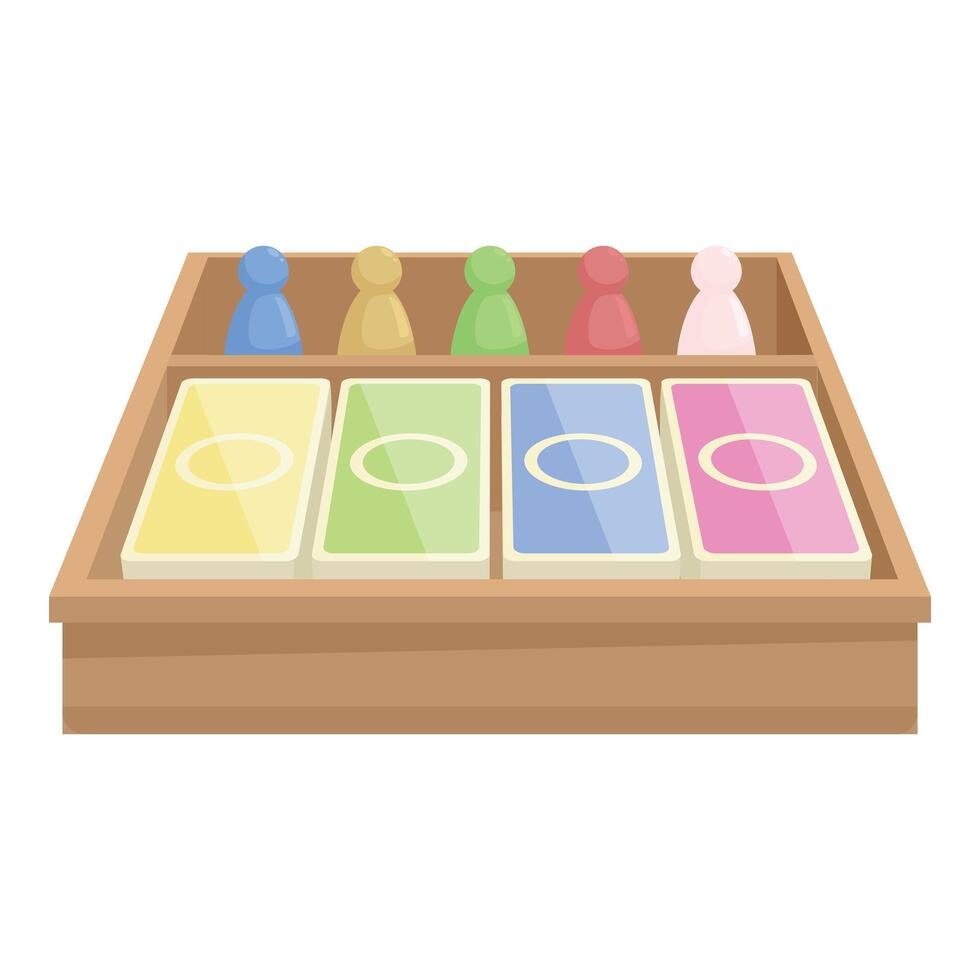

Pourquoi avons-nous créé Le Coup du Siècle ?
En étant adolescent, on ne se rend pas toujours compte de la valeur de la sécurité.
Souvent on consacre son temps à des activités qui ne sont pas essentielles. Pourtant il est indispensable de comprendre ce que signifie la sécurité
C'est pour cela que Le Coup du Siècle a vu le jour : pour informer les jeunes, les sensibiliser aux dangers d'incendie dans une maison et leur apprendre comment prévenir ces risques.


1/2 criminels ont entendus parler du coup du siècle : dans une maison près de leur planque, une famille possèderait un objet d'une valeur inestimable. Il(s) décide(nt) alors de mettre en place un plan pour voler cet objet. Ce plan consiste à déclencher un incendie (l'incendie principal) dans une des pièces de la maison afin de détourner l'attention des gens de la famille. De leur côté, la famille, constituée de deux parents et de leur bébé, a pour objectif de protéger leur bien tout en évitant les risques liés à l'incendie criminel..

Objectifs pédagogiques
- Sensibilisation à la sécurité incendie
- Connaissance des comportements à adopter en cas d'incendie
- Compréhension de l'importance des dispositifs de sécurité à domicile
- Gestion des risques en situation d'urgence
Objectifs ludiques
- Dynamiser l'apprentissage par le jeu
- Stimuler la réflexion stratégique
- Renforcer la prise de décision et la résolution de problèmes
- Plateau pour représenter les différentes pièces de la maison
- Cartes pour représenter les risques, les solutions des risques ainsi les carte bonus
- Les pions pour représenter la position de chaque joueur

La partie se joue sous forme de tours. Chaque joueur possède 2 actions à chaque tour. On définit une action comme un déplacement d’une case OU une utilisation d’objet OU une interaction avec l’environnement.
Chaque joueur possède des cartes bonus. Les cartes bonus des voleurs servent à ralentir la réussite des parents (déclenchement d’incendies supplémentaires, blocages de portes), et sont utilisables à tout moment. Celle des parents servent à mettre les voleurs sous pression (Alarme, chien de garde) et doivent être placées en début de tour.
Sur le plateau, qui représente les pièces d’une maison, plusieurs objets sont répartis. On trouve les éléments permettant de gérer les incendies, ceux liés à l’aide à la personne, l’objet que les voleurs doivent trouver et les clés qui vont avec.
Tous les personnages sont sujets aux risques incendies, que ça soit les voleurs qui les déclenchent ou les parents qui veulent les éteindre. Plusieurs blessures sont donc possibles, qui se soignent avec les éléments du plateau (brûlures, intoxications, …).
Les objectifs principaux de la partie sont multiples. Les voleurs doivent récupérer l’objet de valeur. Cependant, ils sont soumis à une contrainte de temps qui représente l’arrivée de la police, qui varie selon certaines actions des parents. Les parents doivent sauver leur maison en gérant les incendies, mais aussi sauver leur bébé qui dort dans une pièce de la maison. Ils sont soumis à une contrainte de temps liée à la ‘barre de vie’ du bébé. Enfin, tous les joueurs sont soumis à la contrainte de temps lié à l’effondrement de la maison si le feu s’étend trop.
La partie se termine SOIT si les voleurs ont volé l’objet et se sont échappés, SOIT si les parents ont sauvé leur bébé et on éteint les incendies, SOIT si la maison s’est effondrée.
.